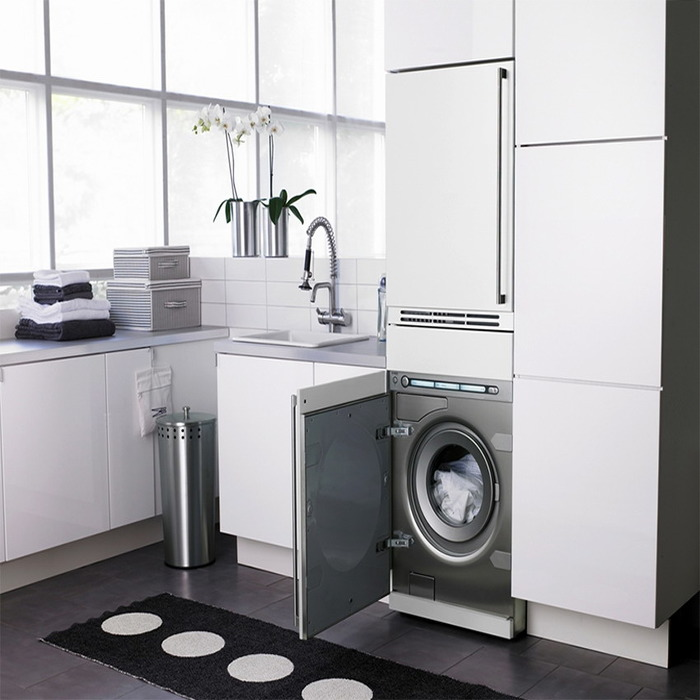

Ремонт сушильных машин любой сложности и конструкции.
 Сушильные машины встречаются намного реже привычных нам стиральных машин по причине того, что данная бытовая техника относится скорее к категории премиум нежели к списку обязательных атрибутов любого дома. Но несмотря на это, хозяйки давно оценили удобство быстрой сушки белья, особенно в больших семьях.
Еще одним плюсом можно назвать то что конструкция данной машины не отличается особо сложной технической составляющей. В силу свой простоты неполадки в работе оборудование — это довольно редкое явление. Если говорить про основные агрегаты, то в их число входит барабан для белья, программный модуль и нагревательный элемент. Но, к сожалению, как и любое другое оборудование, неправильная эксплуатация техники и её естественный износ зачастую приводят к сбоям в работе и требует ремонта. Если привести примеры причин, по которым сушильная машина выходит из строя по вине пользователь, наиболее распространенными являются неправильное подключение, попадание в барабан посторонних предметов, несоблюдение правил эксплуатации и отсутствие профилактических мероприятий.
Как бы то ни было, ремонт такого дорогого оборудование лучше доверить профессионалам с многолетним опытом и знаниями. Если у Вас сломалась сушильная машина звоните в компанию «Handymans» прямо сейчас. Наш специалист приедет в точно назначенное Вами время, выполнит работу быстро и главное качественно. Более того, в ремонте мы всегда используем только оригинальные и качественные запчасти и расходники. Благодаря этому после выполненных нами работ, техника будет безотказно служить Вам долгие годы. Также, у мастеров компании «Handymans» всегда при себе все необходимые запчасти и инструменты. Цены за наши услуги Вас приятно удивят!